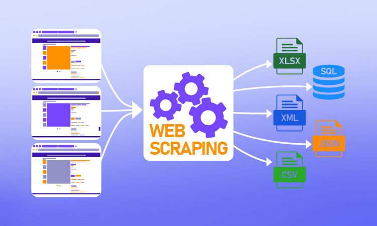
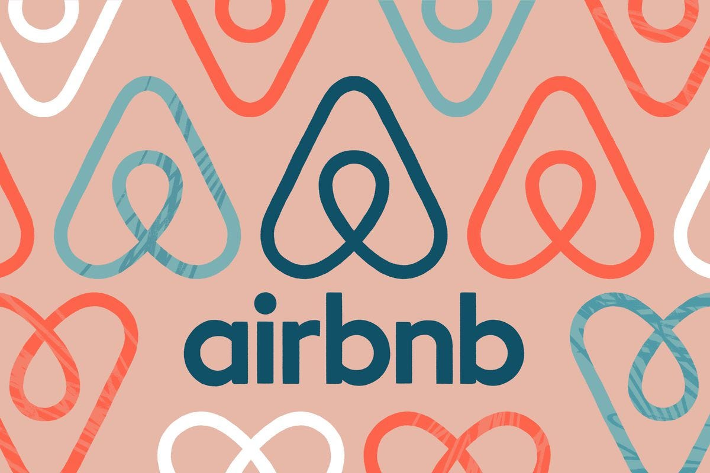

Exploratory Data Analysis of global COVID-19 data using SQL Server to uncover trends in infections,
deaths, and vaccinations.
Showcases advanced SQL techniques like joins,
aggregations, CTEs, window functions, and views.

This project focuses on cleaning and preparing the Nashville Housing dataset
using Microsoft SQL Server. The process includes handling NULL values,
removing duplicates, standardizing data formats, and optimizing data types to create
an analysis-ready dataset. The project demonstrates practical SQL skills in data cleaning,
data validation, and data quality improvement for real-world real estate data.
This project analyzes the relationship between key movie attributes
such as budget, votes, ratings, and runtime with box office revenue using Python.
Correlation analysis and visualizations were used to identify the factors that most
strongly influence a movie’s financial success.

This project demonstrates an end-to-end Python data analysis workflow by scraping laptop product data
from Amazon using BeautifulSoup and Requests.
The collected data was cleaned using Pandas and analyzed with Matplotlib
and Seaborn to identify patterns in laptop ratings and customer reviews.

Analyzed a Data Professional Survey dataset using Power BI to visualize insights on salaries, job roles, programming languages, and job satisfaction.
Built an interactive dashboard to identify trends and key patterns among data professionals.
Analyzed a Data Professional Survey dataset using Power BI to visualize insights on salaries, job roles, programming languages, and job satisfaction.
Built an interactive dashboard to identify trends and key patterns among data professionals.